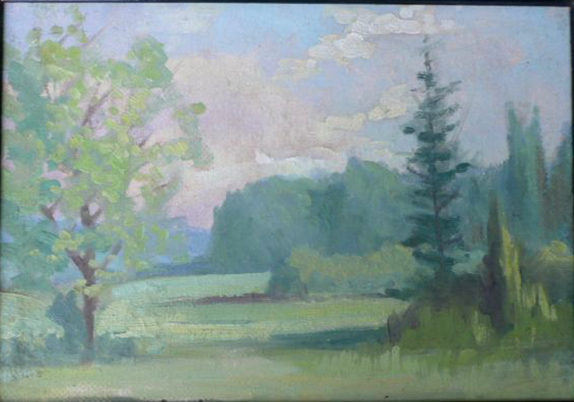

Woods.

Harvest.
Alex Huston borrowed the harvest portion from George Vicat Cole's painting titled "At Arundel, Sussex" and modified it in several ways including removing the tree with yellow/green foliage in the foreground and placing it in the background. George Vicat Cole (1833-1893) was an English painter who was known for his landscape paintings. See Cole's painting below...

Detail from "At Arundel, Sussex" by George Vicat Cole.

Cows in Meadow. Likely inspired by Dutch landscapes.

Leslie and Gorham junction in Newmarket, Ontario.

Birches and boat at Snake Island, Georgina, Ontario.
Sunset. (This is a photo of an old polaroid snapshot of the painting. The original's whereabouts are unknown. There is glare and it is underexposed.)

Birch Shore. (Photograph of a photograph of the painting.)
Surf.

Winter Pines.
Rocky Shore at Snake Island.

Alex's self-built sailboat at Snake Island.
Alex's cottage on Snake Island, Lake Simcoe, Ontario, Canada.

Tall Ship. (painted on what appears to be a folded pillow case or piece of fabric)

Snake Island Shore.

A Dutch Scene. (copied from a postcard)
Interestingly it appears that Alex Huston was a big fan of the Hague School, which was a group of artists who lived and worked in The Hague, Netherlands between 1860 and 1890 and were dedicated to Realism and landscapes. This Dutch scene painted by Huston is an amalgam of two paintings by Hague School artist Jan Hendrik Weissenbruch (1824-1903) depicting the Trekvliet Canal which linked The Hague with the neighboring villages of Rijswijk and Voorburg. The paintings, like most of the Hague School, emphasize atmospheric landscapes. Playfully, Huston reversed Shipping Canal and added a footbridge. Then he added the rowboat from Mill in the Polder to create an amalgam of Weissenbruch's two works.
Jan Weissenbruch: Mill in the Polder and a reversed image of Shipping Canal!

Autumn Tree.

Canoeist.
Summer Field.

Beach Scene.